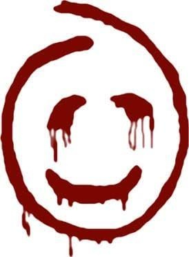

Объект № 1 · Степень опасности: максимальная
Ужас Калифорнии: Кровавый Джон
Дело № RJ-2008 · Гриф: секретно
Материалы засекречены
Дальнейшие материалы содержат подробности трагедии, изменившей жизнь Патрика Джейна. Печать может сорвать только тот, кто готов.
Кровавый Джон (Red John) — неуловимый серийный убийца и главный антагонист первых шести сезонов сериала. Хладнокровный, расчетливый манипулятор, который создал целую сеть последователей внутри правоохранительных органов.

Трагедия Патрика Джейна
До работы в полиции Патрик был популярным медиумом-шарлатаном. Выступая на национальном телевидении, он решил подогреть интерес к своей персоне и публично составил фальшивый психологический профиль Кровавого Джона, назвав его «уродливым, жалким маленьким человеком».
Серийный убийца не простил оскорбления. В тот же вечер, вернувшись домой, Патрик обнаружил на двери спальни записку, а внутри — фирменный знак маньяка, нарисованный кровью на стене. Кровавый Джон убил его жену Анджелу и маленькую дочь Шарлотту, чтобы наказать Джейна за гордыню. Эта ночь навсегда изменила Патрика и заставила его посвятить свою жизнь поимке убийцы.